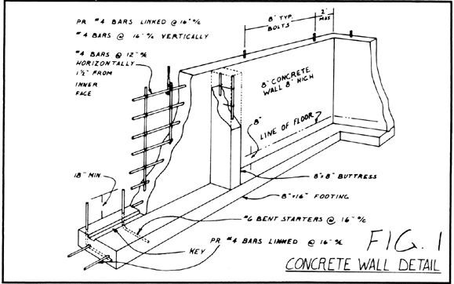
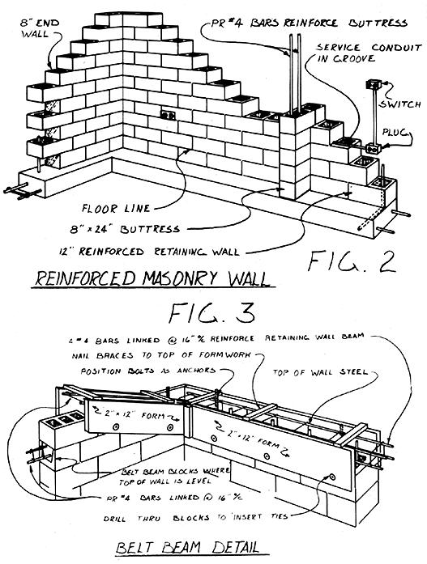

Building The Sun Cottage Part Iv: Walls And Beams
By Angus W. Macdonald, M.Arch.
November/December 1983
Follow an architect as he leads us through the Planning pouring, and pounding involved in. . .
All too many of us have found that building an energy-efficient home seems to be a dream . . . a fantasy that's kept just out of reach by escalating prices and high interest rates. Of course, MOTHER has long been exploring ways of breaking this vicious circle of waste, and one inventor of solutions-whose work we've shown you before (starting back in issue 67)-is architect Angus W. Macdonald. Angus has developed a number of housing designs that apply low-cost building techniques to passive solar, earth-tempered homes . . . and he's agreed to relate, in a set of articles that will span at least six issues of MOTHER, much of what he's learned about planning and building such structures. The series is following the actual construction of one of the architect's standard designs-Sun Cottage-and includes photos and illustrations.
In the last article of this series, we discussed the pouring of the footings, foundation, and floor slab for our earth-sheltered, passive solar home. And now (finally!) it's time to get started with the three-dimensional fun . . . beginning with the construction of the masonry or concrete retaining wall shell. Because of the terrific lateral forces that the earth imposes upon below grade walls, this is one of the most critical stages of the entire planning and construction process: You must carefully follow all of the provisions of your building code that apply to constructing bearing and retaining walls.
To give an example of the scale of these forces, the sideways pressure exerted on a retaining wall by 8 feet of backfill is 600 PSI (pounds per square inch) at floor level! So beware of contractors (or any other "experts") who claim that you're over structuring your dwelling. Many of them have never built a house even remotely like the Sun Cottage . . . and the risk of a cracked and leaking wall isn't one you'll want to take with your home.
CHOOSING METHODS AND MATERIALS
If your site is near an urban area, you may have a choice of materials for your walls. Check the Yellow Pages (under "Concrete", "Contractors", "Concrete Contractors", and "Concrete Forms") to find out whether there's a company close by that
rents forms. In locations where prefabricated metal forms are available, pouring a solid concrete wall will probably be less expensive than would be building with concrete block masonry. In any case, a poured wall will be stronger and more waterproof than will a masonry one. What's more, only an 8" thickness is required for the below-grade portions of a poured structure (as opposed to the 12 inches of masonry needed in the same location) . . . the sides will be smooth (or in a brick pattern molded by the appropriate metal form work), making them easier to waterproof and paint than blocks . . . and less reinforcing steel is required, as shown in Fig. 1. Most companies that do this sort of work will quote a price for pouring both the footings and the walls, since a linking "key" must be provided to prevent the walls from slipping across their footings after backfilling. Of course, the poured walls won't follow the roof line on the east or west ends . . . instead, they'll rise to 8 feet high (to the top of the forms), and you'll just frame triangles, in timber and plywood, on top of the concrete to conform to the slope of the roof.
A third construction option is to dry-stack block to form the walls. This involves using a specially formulated fiberglass cement troweled on both sides of a concrete block wall that's laid up without mortar. (EDITOR'S NOTE: See "My MOTHER's House"; on page 106 of issue 70, for more information about this method.) As is the case with poured concrete, dry-stacking produces smooth, water-resistant surfaces that are easy to paint and seal. However, just as is the case with normal block construction, retaining walls must be reinforced and alternate cavities must be filled with concrete grout. Then again, you might save some money by using this technique, since even novice block-layers can do the work themselves. (The approach is also appealing in instances when a mason is simply unavailable.) On the other hand, some of those savings would be absorbed by the cost of the more expensive fiberglass cement.
If you decide to use dry-stacked walls, be sure to follow the manufacturer's directions when mixing and applying the fiberglass cement. Also, carefully maintain true courses by using small shims between uneven blocks. (If you use lightweight blocks, you'll find it easier to keep the walls even, becau se their dimensions are more uniform than are those of regular concrete blocks.)
STRUCTURE
In any situation where backfill will be more than 4 feet above floor level, standard building codes carefully restrict the length of an unbraced wall to 12 feet. This means that you must provide a cross wall or buttress, at that interval, along the rear wall of the home (see Fig. 2). Furthermore, whether they're built from concrete or masonry, these buttresses must be linked (with reinforcing steel) to the wall itself, since they'll
have to counteract the force of earth-called unbalanced fill in the code-piled outside of the wall.
Furthermore, there are other construction techniques that can help contribute the strength necessary to resist such stresses. For Example, have you ever noticed that it's much harder to push someone over from behind than it is from the front? That's because the length of a person's feet, sticking out in front, helps counteract the force from the rear. For this reason, we'll build the rear wall of our building on the outer edge of its footing. This will help the wall resist lateral forces resulting from backfilling, since the right-angled starter bars projecting from the footing tie the wall and footing together . . . forming a concrete version of a foot and leg. Thus the sideways force of unbalanced fill would have to lift up the entire wall and footing to push it over. As you can see, then, the actual weight of the wall and the roof (equivalent to our hypothetical person's torso and head) helps to stabilize our earth shelter's structure.
Special steel reinforcement, which we'll detail in a few paragraphs, is also required for retaining walls where unbalanced fill exceeds 4 feet in depth. Other walls (such as the south one and, perhaps, the east and west) need not be reinforced, although it's good practice to use web like lateral reinforcing material in every third course. (Don't put it in retaining walls, as it would get in the way of the vertical steel and grouting required for their reinforcement.) Finally; if you're building in California or Alaska (earthquake country), treat all walls as if they were retaining walls.
UP GO THE BLOCKS
If you're using solid concrete, the footings will be 16 inches wide . . . but the block work I'm going to describe here will require 24"wide supports. End walls, bearing partitions, and the front wall will all be centered on their footings-because unbalanced fill at these locations is normally less than 4 feet above floor level-while the rear wall will be set to the outer edge as described previously.
Before you begin, make a story pole from a straight piece of wood, and mark it clearly at 8" intervals to indicate the positioning of the block courses. (If you're dry-stacking, use 75/8" intervals.) Also mark the windowsill heights, door and window head elevations, and the bottom and top of the belt beam (I'll discuss more about this later). By varying colors, you'll be able to tell more easily which item is which. As you build, refer to this pole often-by setting it on the slab against the wall and checking course heights-to remind yourself of all the openings and features in the wall.
Type M mortar cement is best for use on the earth-sheltered walls, since it's much stronger than the type N used for the front wall and partitions. Mix one part cement to three parts clean builder's sand . . . and add clear water that's free from silt and debris. Use just enough water to form a workable, putty like mix, and don't settle for a soupy or a granular, dry mixture. Lay the blocks with full bedded joints (mortared all the way around), and scrape the excess mortar off the inside and outside so that the surfaces are flat.
Don't throw any excess mortar into the cavities, as it could later block the flow of vertical reinforcing grout. Also, don't use reconstituted (remoistened) mortar, because the added water reduces its strength . . . and never lay block or pour concrete at less than 40°F, since freezing temperatures will inhibit curing.
As you begin stacking, starter bars should be sticking out of the footing top (it was actually covered with one course of block in Part III) at intervals of 16 inches along the lines where the retaining walls will go. Carefully lay out the first two rows of block over the starter bars, and mark the locations of reinforcement-which are in the same cavities as the starter bars-on the side of the wall with a grease pencil, so you'll be able to recognize the right cavities in which to insert more steel rods later. The 8" end walls and buttresses will interlock into the 12" rear wall, so you should plan on cutting blocks to avoid creating long vertical joints at these intersections.
Start each course at a corner, always overlapping blocks so there are no continuous vertical joints, and use a plumb bob to insure that the intersections are vertical. A mason's line should also be nailed up temporarily from corner to corner for each course to help you keep the wall straight. When you reach window or door tops, set precast lintels over the openings. Lintels should overlap (bear) the walls at least 8 inches at each end.
If you plan to use recessed electrical service in your house, you'll have to choose from several options available for use with masonry and concrete construction. For one, the service lateral can be clamped to the outside face of the wall before you tackle the waterproofing and backfilling. Then holes can be formed in, or punched through, walls to accommodate the boxes. Conduit may also be inserted into the form work and secured, with the boxes in their correct positions, before you cast the concrete. Or conduit may be placed in a groove made in block webs . . . and left cemented in place in the masonry wall, again with the boxes positioned properly. The mason will chip or cut blocks to fit around recessed boxes.
Once the walls have reached the point where the top must be formed and the cores poured, insert No. 6 steel bars into the marked cavities in the rear wall and No. 4 bars into alternate cavities of any end walls where the floor is more than 4 feet below grade. Position all vertical rods to the 1 interior side of the cavities, about 7-1/2 inches from the exterior block face.
Concrete grout rated at 2,500 PSI can now be poured into the cavities directly from the truck hopper, if you have a good solid berm behind the house (and a cooperative driver). Concrete grout has finer aggregate than does normal concrete-which should lessen the chance of stones getting caught between the steel and the cavity walls-and it may be mixed with more water than usual for ease of placement. In this case, it's best to avoid a stiff mix, or the cavity bottoms won't be filled. Too much water, however, will make the grout too weak. In any event, have at least one other person on hand to rod (vibrate) the cavities to insure complete dispersal of the concrete.
A bond (or belt) beam must be formed around the top of all earth-bermed or - sheltered walls to tie the block together. To prepare the beam, create reinforcing cages consisting of four No. 4 bars linked with wire to each vertical reinforcing bar, and anchor them between 2 X 12 forms tied and braced to the top of the wall. These forms must also be built with a slope that conforms to the roof pitch on the end walls, as shown in Fig. 3. Stuff heavy paper into the cavities that you wish to keep hollow (to prevent wasting concrete grout), fill the beam forms with 3,500 PSI concrete, and level the tops.
Finally, embed 3/8'' X 10" bolts upside down into the belt beam or the top of the poured wall, in such a way that they project between 2 and 3 inches and can act as anchors for the treated sills. The fasteners should be 8 feet or less on center (o.c.) and no more than 2 feet from any corner or end. To keep them in place during the pour, the bolts may be wired to the reinforcement.
It isn't necessary to form a bond beam for the top of the front wall, on solid concrete walls, or with interior walls. In addition, when dealing with the end walls you may lay special U-shaped bond beam blocks on the top of the wall and place a pair of No. 4 bars, linked in ladder configuration, in the trough. Also, if you plan to pour a concrete roof slab, a bond beam won't be required, because the roof itself will act as a diaphragm, tying the top of the walls together.
On an earth-sheltered house, raising the walls is a particularly important stage. Getting the job done correctly will guarantee years of security (and assure that your floors will stay dry!). And the next step-erecting the roof supporting structural frame-will put a shelter over your head. Having a place to work out of the weather is a landmark for any builder, so be sure to be with us for Part V!
EDITOR'S NOTE: For our example in this series of articles, we've chosen the two-bedroom Sun Cottage, an expandable earth-sheltered, passive solar plan with 1,023 square feet and an estimated building cost of $24,000 (assuming some owner assistance in construction). Angus W. Macdonald has drawn this plan according to HUD's Minimum Property Standards and the Building Officials and Code Administrators' (BOCA) building codes. Complete architectural drawings, specifications, and cost analysis may be purchased from Survival Consultants, Dept. TMEN, P.O. Box 21, Rapidan, Virginia 22733. You can also receive Angus's catalog of 12 low-cost, passive solar, earth-tempered homes by sending $5.00 to Survival Consultants.
 |
 |
 |